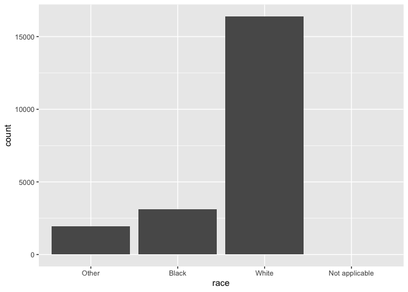
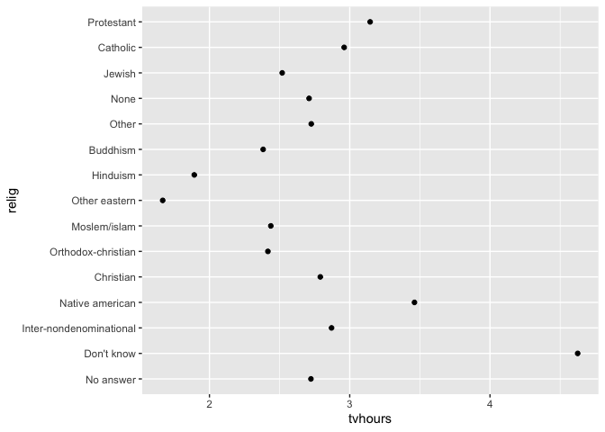
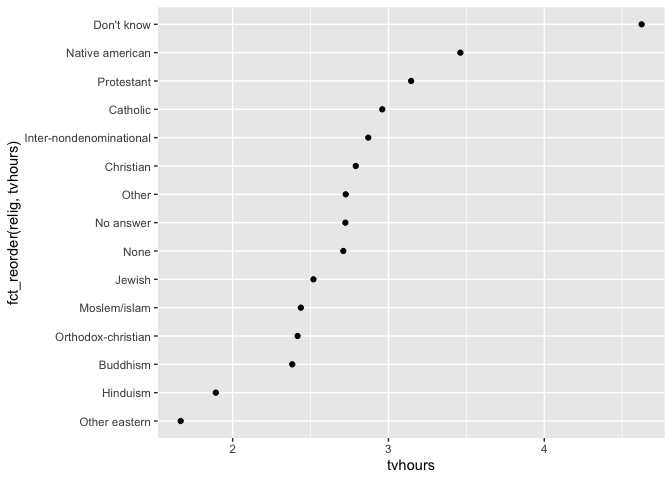
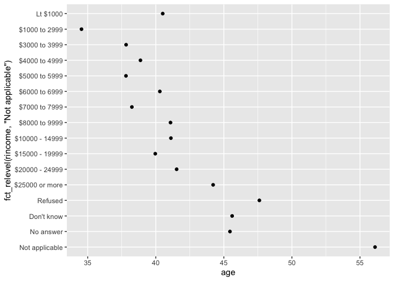
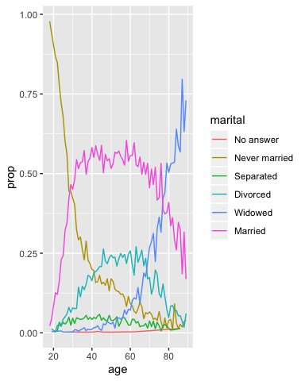
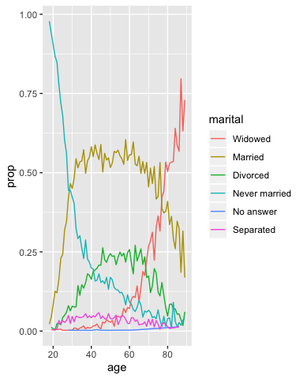
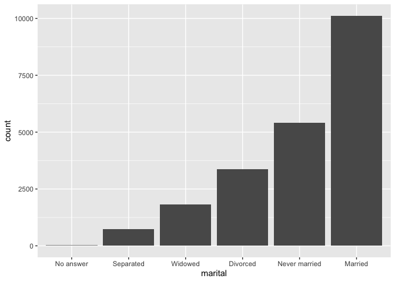

Lesson 13: Factors
Learning objectives
Setup
Load the tidyverse
library(tidyverse)
## Factors in R
In R, factors are used to work with categorical variables, variables that have a fixed and known set of possible values. They are also useful when you want to display character vectors in a non-alphabetical order. The values a factor can take on are called the levels. When working with factors, the two most common operations are changing the order of the levels, and changing the values (names) of the levels.
To work with factors, we’ll use the forcats package, which is part of the core tidyverse. It provides tools for dealing with categorical variables (and it’s an anagram of factors!) using a wide range of helpers for working with factors.
Creating factors
Imagine that you have a variable that records month:
x1 <- c("Dec", "Apr", "Jan", "Mar")Using a string to record this variable has two problems:
- There are only twelve possible months, and there’s nothing saving you from typos:
x2 <- c("Dec", "Apr", "Jam", "Mar")- It doesn’t sort in a useful way:
sort(x1)## [1] "Apr" "Dec" "Jan" "Mar"You can fix both of these problems with a factor. To create a factor you must start by creating a list of the valid levels:
month_levels <- c(
"Jan", "Feb", "Mar", "Apr", "May", "Jun",
"Jul", "Aug", "Sep", "Oct", "Nov", "Dec"
)Now you can create a factor:
y1 <- factor(x1, levels = month_levels)
y1## [1] Dec Apr Jan Mar
## Levels: Jan Feb Mar Apr May Jun Jul Aug Sep Oct Nov Decsort(y1)## [1] Jan Mar Apr Dec
## Levels: Jan Feb Mar Apr May Jun Jul Aug Sep Oct Nov DecAnd any values not in the set will be silently converted to NA:
y2 <- factor(x2, levels = month_levels)
y2## [1] Dec Apr <NA> Mar
## Levels: Jan Feb Mar Apr May Jun Jul Aug Sep Oct Nov DecIf you want a warning, you can use readr::parse_factor():
y2 <- parse_factor(x2, levels = month_levels)## Warning: 1 parsing failure.
## row col expected actual
## 3 -- value in level set JamIf you omit the levels, they’ll be taken from the data in alphabetical order:
factor(x1)## [1] Dec Apr Jan Mar
## Levels: Apr Dec Jan MarSometimes you’d prefer that the order of the levels match the order of the first appearance in the data. You can do that when creating the factor by setting levels to unique(x), or after the fact, with fct_inorder():
f1 <- factor(x1, levels = unique(x1))
f1## [1] Dec Apr Jan Mar
## Levels: Dec Apr Jan Marf2 <- x1 %>% factor() %>% fct_inorder()
f2## [1] Dec Apr Jan Mar
## Levels: Dec Apr Jan MarIf you ever need to access the set of valid levels directly, you can do so with levels():
levels(f2)## [1] "Dec" "Apr" "Jan" "Mar"General Social Survey
As an example, we’re going to focus on forcats::gss_cat. It’s a sample of data from the General Social Survey, which is a long-running US survey conducted by the independent research organization NORC at the University of Chicago. The survey has thousands of questions, so in gss_cat we’ve selected a handful that will illustrate some common challenges you’ll encounter when working with factors.
gss_cat## # A tibble: 21,483 x 9
## year marital age race rincome partyid relig denom tvhours
## <int> <fct> <int> <fct> <fct> <fct> <fct> <fct> <int>
## 1 2000 Never ma… 26 White $8000 to … Ind,near r… Protesta… Souther… 12
## 2 2000 Divorced 48 White $8000 to … Not str re… Protesta… Baptist… NA
## 3 2000 Widowed 67 White Not appli… Independent Protesta… No deno… 2
## 4 2000 Never ma… 39 White Not appli… Ind,near r… Orthodox… Not app… 4
## 5 2000 Divorced 25 White Not appli… Not str de… None Not app… 1
## 6 2000 Married 25 White $20000 - … Strong dem… Protesta… Souther… NA
## 7 2000 Never ma… 36 White $25000 or… Not str re… Christian Not app… 3
## 8 2000 Divorced 44 White $7000 to … Ind,near d… Protesta… Luthera… NA
## 9 2000 Married 44 White $25000 or… Not str de… Protesta… Other 0
## 10 2000 Married 47 White $25000 or… Strong rep… Protesta… Souther… 3
## # … with 21,473 more rows(Remember, since this dataset is provided by a package, you can get more information about the variables with ?gss_cat.)
When factors are stored in a tibble, you can’t see their levels so easily. One way to see them is with count():
gss_cat %>%
count(race)## # A tibble: 3 x 2
## race n
## <fct> <int>
## 1 Other 1959
## 2 Black 3129
## 3 White 16395Or with a bar chart:
ggplot(gss_cat, aes(race)) +
geom_bar()
By default, ggplot2 will drop levels that don’t have any values. You can force them to display with:
ggplot(gss_cat, aes(race)) +
geom_bar() +
scale_x_discrete(drop = FALSE)
These levels represent valid values that simply did not occur in this dataset. Unfortunately, dplyr doesn’t yet have a drop option, but it will in the future.
When working with factors, the two most common operations are changing the order of the levels, and changing the values of the levels. Those operations are described in the sections below.
Exercise 1
Explore the distribution of
rincome(reported income). What makes the default bar chart hard to understand? How could you improve the plot?What is the most common
religin this survey? What’s the most commonpartyid?Which
religdoesdenom(denomination) apply to? How can you find out with a table? How can you find out with a visualisation?
Modifying factor order
It’s often useful to change the order of the factor levels in a visualisation. For example, imagine you want to explore the average number of hours spent watching TV per day across religions:
relig_summary <- gss_cat %>%
group_by(relig) %>%
summarise(
age = mean(age, na.rm = TRUE),
tvhours = mean(tvhours, na.rm = TRUE),
n = n()
)
ggplot(relig_summary, aes(tvhours, relig)) + geom_point()
It is difficult to interpret this plot because there’s no overall pattern. We can improve it by reordering the levels of relig using fct_reorder(). fct_reorder() takes three arguments:
f, the factor whose levels you want to modify.x, a numeric vector that you want to use to reorder the levels.- Optionally,
fun, a function that’s used if there are multiple values ofxfor each value off. The default value ismedian.
ggplot(relig_summary, aes(tvhours, fct_reorder(relig, tvhours))) +
geom_point()
Reordering religion makes it much easier to see that people in the “Don’t know” category watch much more TV, and Hinduism & Other Eastern religions watch much less.
As you start making more complicated transformations, I’d recommend moving them out of aes() and into a separate mutate() step. For example, you could rewrite the plot above as:
relig_summary %>%
mutate(relig = fct_reorder(relig, tvhours)) %>%
ggplot(aes(tvhours, relig)) +
geom_point()What if we create a similar plot looking at how average age varies across reported income level?
rincome_summary <- gss_cat %>%
group_by(rincome) %>%
summarise(
age = mean(age, na.rm = TRUE),
tvhours = mean(tvhours, na.rm = TRUE),
n = n()
)
ggplot(rincome_summary, aes(age, fct_reorder(rincome, age))) + geom_point()
Here, arbitrarily reordering the levels isn’t a good idea! That’s because rincome already has a principled order that we shouldn’t mess with. Reserve fct_reorder() for factors whose levels are arbitrarily ordered.
However, it does make sense to pull “Not applicable” to the front with the other special levels. You can use fct_relevel(). It takes a factor, f, and then any number of levels that you want to move to the front of the line.
ggplot(rincome_summary, aes(age, fct_relevel(rincome, "Not applicable"))) +
geom_point()
Why do you think the average age for “Not applicable” is so high?
Another type of reordering is useful when you are colouring the lines on a plot. fct_reorder2() reorders the factor by the y values associated with the largest x values. This makes the plot easier to read because the line colours line up with the legend.
by_age <- gss_cat %>%
filter(!is.na(age)) %>%
count(age, marital) %>%
group_by(age) %>%
mutate(prop = n / sum(n))
ggplot(by_age, aes(age, prop, colour = marital)) +
geom_line(na.rm = TRUE)
ggplot(by_age, aes(age, prop, colour = fct_reorder2(marital, age, prop))) +
geom_line() +
labs(colour = "marital")
Finally, for bar plots, you can use fct_infreq() to order levels in increasing frequency: this is the simplest type of reordering because it doesn’t need any extra variables. You may want to combine with fct_rev().
gss_cat %>%
mutate(marital = marital %>% fct_infreq() %>% fct_rev()) %>%
ggplot(aes(marital)) +
geom_bar()
Exercise 2
There are some suspiciously high numbers in
tvhours. Is the mean a good summary?For each factor in
gss_catidentify whether the order of the levels is arbitrary or principled.Why did moving “Not applicable” to the front of the levels move it to the bottom of the plot?
Modifying factor levels
More powerful than changing the orders of the levels is changing their values. This allows you to clarify labels for publication, and collapse levels for high-level displays. The most general and powerful tool is fct_recode(). It allows you to recode, or change, the value of each level. For example, take the gss_cat$partyid:
gss_cat %>% count(partyid)## # A tibble: 10 x 2
## partyid n
## <fct> <int>
## 1 No answer 154
## 2 Don't know 1
## 3 Other party 393
## 4 Strong republican 2314
## 5 Not str republican 3032
## 6 Ind,near rep 1791
## 7 Independent 4119
## 8 Ind,near dem 2499
## 9 Not str democrat 3690
## 10 Strong democrat 3490The levels are terse and inconsistent. Let’s tweak them to be longer and use a parallel construction.
gss_cat %>%
mutate(partyid = fct_recode(partyid,
"Republican, strong" = "Strong republican",
"Republican, weak" = "Not str republican",
"Independent, near rep" = "Ind,near rep",
"Independent, near dem" = "Ind,near dem",
"Democrat, weak" = "Not str democrat",
"Democrat, strong" = "Strong democrat"
)) %>%
count(partyid)## # A tibble: 10 x 2
## partyid n
## <fct> <int>
## 1 No answer 154
## 2 Don't know 1
## 3 Other party 393
## 4 Republican, strong 2314
## 5 Republican, weak 3032
## 6 Independent, near rep 1791
## 7 Independent 4119
## 8 Independent, near dem 2499
## 9 Democrat, weak 3690
## 10 Democrat, strong 3490fct_recode() will leave levels that aren’t explicitly mentioned as is, and will warn you if you accidentally refer to a level that doesn’t exist.
To combine groups, you can assign multiple old levels to the same new level:
gss_cat %>%
mutate(partyid = fct_recode(partyid,
"Republican, strong" = "Strong republican",
"Republican, weak" = "Not str republican",
"Independent, near rep" = "Ind,near rep",
"Independent, near dem" = "Ind,near dem",
"Democrat, weak" = "Not str democrat",
"Democrat, strong" = "Strong democrat",
"Other" = "No answer",
"Other" = "Don't know",
"Other" = "Other party"
)) %>%
count(partyid)## # A tibble: 8 x 2
## partyid n
## <fct> <int>
## 1 Other 548
## 2 Republican, strong 2314
## 3 Republican, weak 3032
## 4 Independent, near rep 1791
## 5 Independent 4119
## 6 Independent, near dem 2499
## 7 Democrat, weak 3690
## 8 Democrat, strong 3490You must use this technique with care: if you group together categories that are truly different you will end up with misleading results.
If you want to collapse a lot of levels, fct_collapse() is a useful variant of fct_recode(). For each new variable, you can provide a vector of old levels:
gss_cat %>%
mutate(partyid = fct_collapse(partyid,
other = c("No answer", "Don't know", "Other party"),
rep = c("Strong republican", "Not str republican"),
ind = c("Ind,near rep", "Independent", "Ind,near dem"),
dem = c("Not str democrat", "Strong democrat")
)) %>%
count(partyid)## # A tibble: 4 x 2
## partyid n
## <fct> <int>
## 1 other 548
## 2 rep 5346
## 3 ind 8409
## 4 dem 7180Sometimes you just want to lump together all the small groups to make a plot or table simpler. That’s the job of fct_lump():
gss_cat %>%
mutate(relig = fct_lump(relig)) %>%
count(relig)## # A tibble: 2 x 2
## relig n
## <fct> <int>
## 1 Protestant 10846
## 2 Other 10637The default behaviour is to progressively lump together the smallest groups, ensuring that the aggregate is still the smallest group. In this case it’s not very helpful: it is true that the majority of Americans in this survey are Protestant, but we’ve probably over collapsed.
Instead, we can use the n parameter to specify how many groups (excluding other) we want to keep:
gss_cat %>%
mutate(relig = fct_lump(relig, n = 10)) %>%
count(relig, sort = TRUE) %>%
print(n = Inf)## # A tibble: 10 x 2
## relig n
## <fct> <int>
## 1 Protestant 10846
## 2 Catholic 5124
## 3 None 3523
## 4 Christian 689
## 5 Other 458
## 6 Jewish 388
## 7 Buddhism 147
## 8 Inter-nondenominational 109
## 9 Moslem/islam 104
## 10 Orthodox-christian 95Exercise 3
- How have the proportions of people identifying as Democrat, Republican, andIndependent changed over time?
- How could you collapse
rincomeinto a small set of categories?